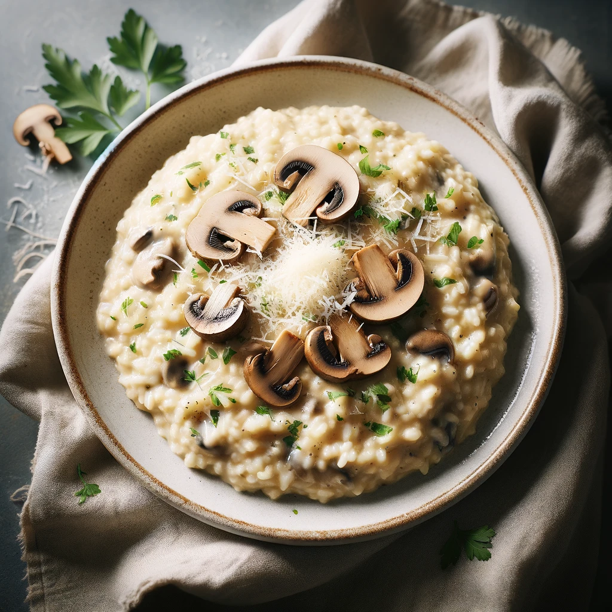

Creamy Mushroom Risotto

Description
Creamy Mushroom Risotto is the epitome of comfort food, offering a rich and velvety texture that is both comforting and luxurious. This dish begins with the sautéing of finely chopped onions and garlic, followed by the addition of earthy mushrooms that are cooked down until tender. Arborio rice, known for its ability to absorb liquids and release starch, is then toasted slightly before being gradually cooked in a warm broth. With each addition of broth, the risotto becomes creamier, embodying a perfect balance of flavors. A generous amount of Parmesan cheese is stirred in at the end, adding a savory depth of flavor and a creamy texture that is irresistible. Garnished with fresh parsley, this creamy mushroom risotto is not just a dish but an experience, offering a soothing embrace with every bite. Perfect for a cozy dinner, it's a testament to the simple elegance of Italian cooking.
Ingredients
- 1 tablespoon olive oil
- 2 tablespoons unsalted butter, divided
- 1 onion, finely chopped
- 2 cloves garlic, minced
- 250g mushrooms, sliced
- 1 cup Arborio rice
- 1/2 cup dry white wine
- 4 cups vegetable broth, warmed
- 1/2 cup Parmesan cheese, grated
- Salt and pepper, to taste
- 2 tablespoons fresh parsley, chopped (for garnish)
Steps
- Heat the olive oil and 1 tablespoon of butter in a large pan over medium heat. Add the onion and garlic, cooking until soft and translucent, about 3 minutes.
- Add the mushrooms and cook until they are soft and their moisture has evaporated, about 5 minutes.
- Stir in the Arborio rice, making sure it's well-coated with the oil and butter. Cook for 1-2 minutes until the edges of the rice become slightly translucent.
- Pour in the white wine and stir until it has been fully absorbed by the rice.
- Add the vegetable broth, one ladle at a time, stirring frequently. Wait until each ladle of broth has been mostly absorbed before adding the next. Continue this process until the rice is creamy and cooked to al dente, about 18-20 minutes.
- Stir in the remaining butter and the Parmesan cheese. Season with salt and pepper to taste.
- Garnish the risotto with fresh parsley before serving. Enjoy your creamy mushroom risotto!